Working with Data: Structure, Measures, and Study Design
Opening scenario
A manager asks an analyst what sounds like a simple question: “How many patients did we serve last quarter?” Watch how one question turns into a sequence of decisions:
- The question. Count the distinct patients the clinic cared for during the quarter.
- The first action. She opens the appointment file and finds 36,000 rows.
- The tempting answer. She could report 36,000 and move on.
- The outcome. That number is wrong twice over. It counts visits, not patients, so a patient who came four times is counted four times. And the file covers two full years, not just last quarter, so it is not even scoped to the question.
The report she produces depends entirely on what a single row of her table represents. Get that wrong, and every count built on top of it is wrong too.
This chapter is about the shape of data: how tables are built, how they link to one another, and how to name what one row represents before you count anything. Once you can name what a row is, the chapter turns to the next decision, defining exactly what you are counting from it.
By the end of this chapter, you will be able to:
- Read a table as rows of records and columns of variables.
- Classify a variable as quantitative (discrete or continuous) or qualitative (nominal or ordinal), and explain why the type governs how it can be summarized.
- Identify a primary key and a foreign key, check that they hold, and explain what joining two tables on them produces.
- Name the unit of analysis of a table and explain why it decides what you can count.
- Use a PivotTable to regroup a table to a coarser unit of analysis.
- Define a measure by its numerator, denominator, inclusion rules, and time window, and write it as an operational definition.
- Judge whether a measure actually answers the question it is meant to answer.
- Tell an observational study apart from an experiment, and say what each can and cannot show.
- Describe a target population, a sampling frame, and a sample, and name the biases in the gaps between them.
- Match a sampling method (simple random, stratified, cluster, or systematic) to a situation.
- Explain how a control group and randomization let an experiment support a causal claim.
Key concepts
Chapter 2 introduced the idea that dimension tables describe actors and fact tables record events. This chapter looks inside the tables themselves. Nearly all introductory analysis runs on rectangular data, and reading that rectangle well is a core analytic skill worth developing deliberately. The chapter has three connected parts. The first reads the structure of a table and names what one row represents. The second defines the measure you compute from it. The third steps back to ask where the data came from: whether it was observed or produced by an experiment, who was sampled, and which biases crept in along the way. The first two parts answer different questions about a file you already have: its structure tells you what kinds of record you are able to count, such as patients, visits, or claims, while a measure’s definition tells you which of those records to count and under what rules. The third part reminds you that even a correct count from a flawed sample can mislead. Get any of the three wrong, and the number means something other than you think.
Rows are records, columns are variables
A table is a rectangle of data, built from two elements:
- Each row is one record, also called an observation: a single entity the table describes.
- Each column is a variable: one attribute measured for every record.
In datasets/DS1_patient_dim.csv, every row is a patient,
and every column, such as birth_date or
payer_primary_id, records one fact about that patient. This
structure is called a data matrix, and it is the
default shape for analysis because new records add as rows and new
attributes add as columns without disturbing anything else. When you are
handed a spreadsheet, the first move is to read it this way: what is one
row, and what does each column measure?
Figure 1 labels the parts of a table on a few appointment rows, from a single cell up to the whole column and row.
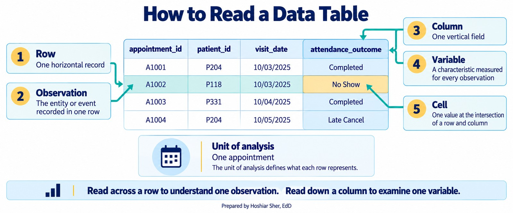
A table reads cleanly only when it is tidy: each row is one observation at a single grain, and each column is one variable (Wickham, 2014; Broman & Woo, 2018). Figure 2 contrasts a messy table, which crams several appointments and a patient-level summary into one row, with the tidy version that keeps one appointment per row. Chapter 8 returns to reshaping messy files; for now, notice that a tidy shape is what makes the filtering, grouping, and joining in this chapter reliable.
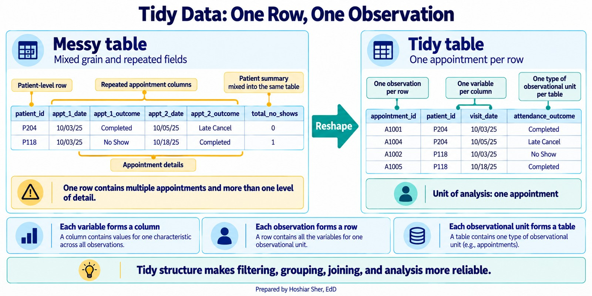
Classifying variables by type
Naming what a column measures is only the first half of reading it. The second half is knowing what kind of value the column holds, because the type decides what you are allowed to do with it. Two columns can both contain numbers and yet call for entirely different handling: averaging a patient’s length of stay produces a meaningful average, but averaging a patient identifier produces a number that points at no real patient, because the identifier only looks like a quantity. Deciding which type a variable belongs to is the first thing introductory statistics texts such as OpenIntro settle before any analysis begins (Diez et al., 2019).
Every variable is one of two broad kinds, and each kind splits once more.
A quantitative variable, also called numeric, holds a quantity you can do arithmetic on, a value where adding and averaging make sense. It comes in two forms:
- Discrete: a count that takes separate, whole
values. Examples:
lead_days, the number of whole days between booking and the visit, or a patient’s number of prior no-shows. - Continuous: a value measured on a scale that can
take any value in a range. Examples:
copay_usd, a patient’s weight, or an emergency department stay in minutes, where a finer value is always possible between any two others.
A qualitative variable, also called categorical,
holds a label that places a record in a group. Its distinct values are
its levels; attendance_outcome has five
levels, from Completed to Rescheduled. It also
comes in two forms:
- Nominal: categories with no inherent order.
Examples:
visit_type, a facility name, or a patient’s primary payer. One category is not higher or lower than another; they are simply different. - Ordinal: categories with a meaningful order but not necessarily equal gaps. Examples: a patient-satisfaction rating from 1 (very dissatisfied) to 5 (very satisfied), a triage acuity level, or a cancer stage from I to IV.
You can rank ordinal values, but you cannot assume the step from 1 to 2 is the same size as the step from 4 to 5, which is why averaging them can mislead.
Figure 3 gathers the whole taxonomy on one page, each branch ending in a real column from the appointment file.
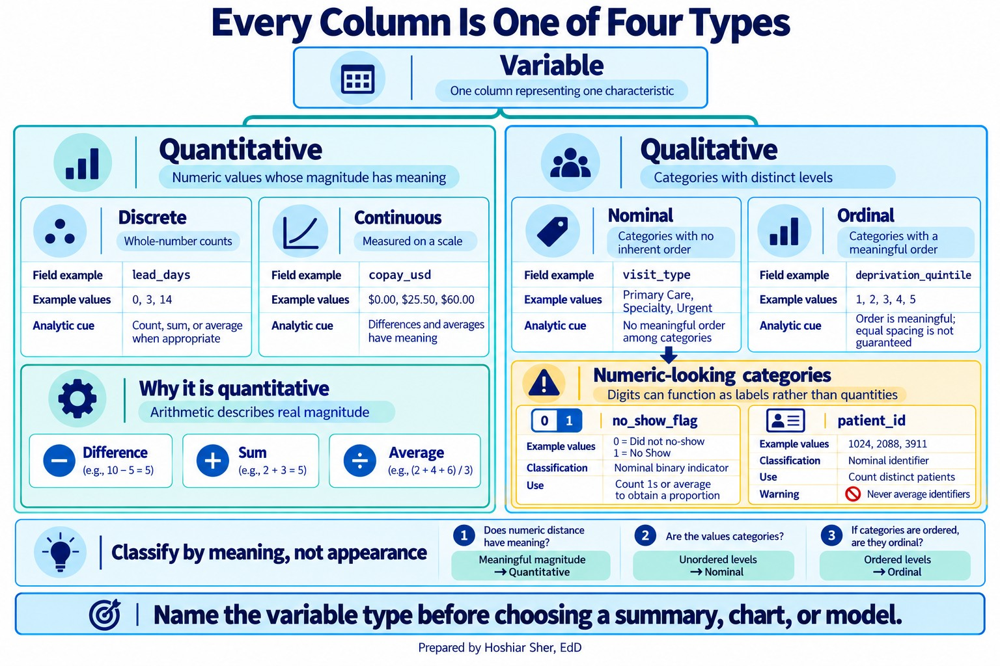
Whether two variables move together, and whether one helps predict another, is a question that needs their types settled first; Chapters 11 and 12 take it up.
Before you summarize a column, name its type. Quantitative variables are discrete (counts) or continuous (measured on a scale); qualitative variables are nominal (unordered groups) or ordinal (ordered groups). The type decides which summary, chart, and model are honest, choices you will make in Chapters 9 through 13.
Watch for columns that look numeric but are not quantities:
- A 0/1 flag like
no_show_flagis a two-category label in disguise, not a count. - An identifier like
patient_id,provider_id, orfacility_idis a label, often a code such asRBP000001orSP03, not a quantity; its average would point at no real record.
Neither is a fifth type of variable. Both are really nominal
variables wearing numeric clothing, so they belong on the qualitative
side of the tree even when their values happen to be digits. What you
can legitimately do with a 0/1 flag is count how many equal 1,
or average it to get a rate, a proportion, which is a
genuine quantity even though the flag itself is a category. An
identifier never earns that treatment: you can count distinct
identifiers, but you can never average one. This is exactly why Chapter
3 filtered before averaging: cancelled and rescheduled appointments also
carry no_show_flag = 0, so averaging the whole column gives
13.6 percent, every scheduled appointment in the denominator, not the
16.1 percent kept-or-missed rate the clinic actually wanted.
Keys link tables together
Data is spread across many tables, so tables need a way to point at each other:
- A primary key is a column, or a combination of
columns, whose value is unique for every row and never missing, a stable
name for that record. In the patient dimension,
patient_idis the primary key: no two patients share one, and none is blank. - A foreign key is a column in another table that
refers back to a primary key somewhere else. In
datasets/DS2_appointments_clean.csv, thepatient_idcolumn is a foreign key that points at the patient dimension.
Keys are what let you connect an appointment to the person who booked
it. Using a key to pull columns from one table into another, matching
rows wherever the keys agree, is called a join. Join
the appointment fact table to the patient dimension on
patient_id, and you get a wider table in which every
appointment row now also carries that patient’s attributes, such as
primary payer or preferred language. (Fact tables are sometimes widened
on purpose, copying a few dimension attributes in for convenience; Going
Deeper returns to that trade-off.) A join is only as sound as the keys
it runs on, so two things must hold:
- The primary key is genuinely unique, with no duplicates.
- Every foreign key value exists in the table it points to. This second property is called referential integrity.
When referential integrity fails, rows point at records that are not there, and the join silently drops them (in an inner join) or leaves their new columns blank (in a left join). Duplication is a separate fault with a separate cause: it comes from a primary key that is not actually unique, so one fact row matches many dimension rows and the join multiplies them. Chapter 8 shows how to check for both problems as part of cleaning.
Figure 4 shows the two failures side by side.
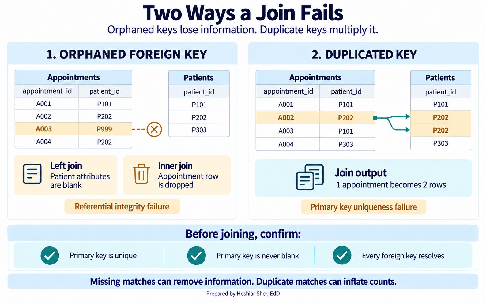
A primary key uniquely names each row. A foreign key in another table points back to it. Before you trust a join, confirm the primary key is unique and every foreign key resolves.
Figure 5 draws these links. The appointment fact table in the center holds a foreign key for each actor, and every arrow points to the dimension table whose primary key it matches. This star shape, one fact table surrounded by its dimensions, is the backbone of the teaching datasets and a common structure in analytic data warehouses (Kimball & Ross, 2013).
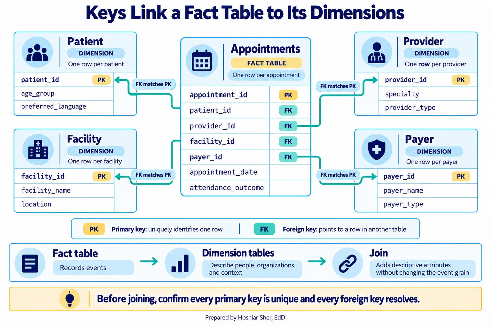
The unit of analysis decides what a row means
The unit of analysis, also called the grain, is the answer to “what does one row represent?” It is the single most important fact about a table, because it sets what you can count and how. A table at the appointment grain can count visits and no-shows. It cannot directly count patients, because one patient can own many rows. To count patients you must first change the grain, collapsing many appointment rows into one row per patient. The number changes when the grain changes, and that is not an error. It is the whole point.
From data to a measure
Knowing what one row represents tells you what you can count. It does not yet tell you what to count. That second decision is the measure, and it is where most analytic disagreements begin. Recall from Chapter 3 that you computed one no-show rate, 16.1 percent, and the text warned you to state the rule you used. This section is about why that warning matters and how to write the rule down.
A measure is a precise, repeatable definition of something you can count or calculate. A metric is the number that definition produces when you run it on data. The order matters: you define the measure first, then the data gives you the metric. When two analysts report different numbers from the same file, the cause is usually not a spreadsheet mistake. It is two different measures wearing the same name.
Figure 6 follows one measure from the decision question to the reported number, with the written definition in the middle.
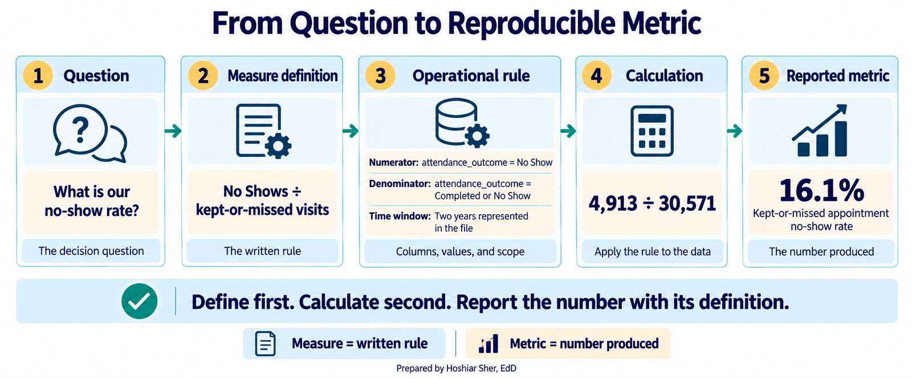
Many healthcare measures are expressed as rates or proportions, and a rate has four parts:
- Numerator: what you are counting, the events of interest.
- Denominator: the population those events are drawn from.
- Inclusion and exclusion criteria: which records belong in the denominator at all.
- Time window: the period the measure covers.
State all four and the measure is defined; leave one unstated and it is not.
A rate is not defined until you can state its numerator, its denominator, what it includes and excludes, and its time window. If any of the four is missing, you do not yet have a measure, only a name for one.
Figure 7 assembles the four parts into one no-show rate definition.
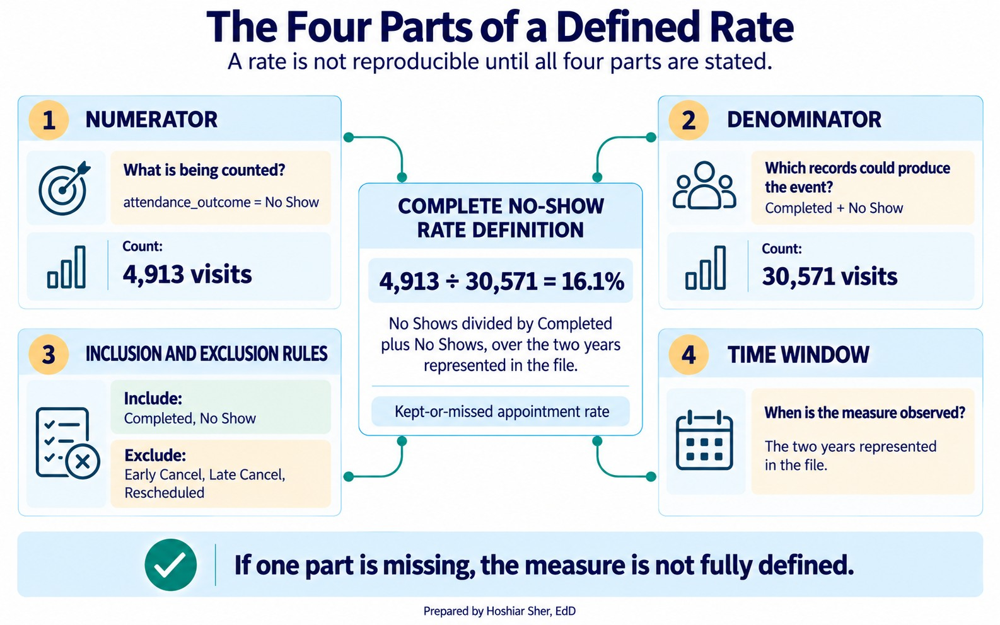
The denominator is where the unit of analysis returns. A no-show rate “per visit” and a no-show rate “per patient” are different measures with different denominators, because they count at different grains. Choosing the denominator is therefore not a formality. It decides what the rate is really measuring, which is why the structure and measure parts of this chapter are the same skill seen from two sides.
A definition also has to be written in the language of the data, not
in English alone. An operational definition states the
measure in terms of the actual columns and values in the file. “A
no-show is a patient who did not attend” is an idea. “A no-show is a row
where attendance_outcome equals No Show” is an
operational definition: another analyst can run it and get the same
result. The first cannot be run at all.
Conventions vary across the field: some quality programs, including HEDIS (the Healthcare Effectiveness Data and Information Set), reserve measure for the written specification and rate for the number it produces. The labels matter less than the habit behind them, which is to pin down the definition before you compute anything.
A measure can be perfectly defined and still be the wrong measure. Construct validity asks whether the thing you can actually count stands in for the thing you care about (Cronbach & Meehl, 1955). The no-show rate is easy to count, but if the real concern is patients falling out of care, it misses everyone who never booked an appointment at all, because they are nowhere in the file. When what you count and what you care about drift apart, the cleanest number in the report can still point the wrong way. Exercise 9 asks you to find a measure with exactly this flaw.
Figure 8 shows the gap: the no-show rate captures only patients who reached scheduling, while the broader concern includes people who never booked at all.
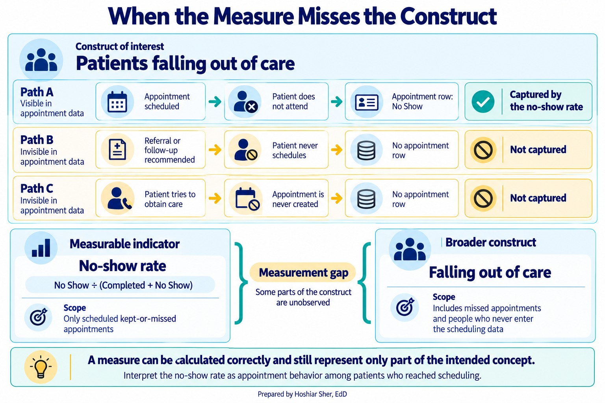
Never report a rate without its definition. “The no-show rate is 16 percent” invites the reader to assume a denominator, and they will assume the wrong one. Report it as “16.1 percent of kept-or-missed appointments over the two years in the file,” so the number carries its own rule.
Measures also differ in what part of care they capture. A durable framework sorts them into three kinds (Donabedian, 1988): structure measures describe what a system has, such as staff and equipment; process measures describe what care is delivered, such as the share of eligible patients given an A1c test; and outcome measures describe what happens to health, such as the share who reach A1c control, which is an intermediate outcome, a lab value on the way to the complications the care is meant to prevent. Figure 9 lines up the three for diabetes care. Process measures are often the most actionable, because a team controls the care it delivers more directly than the outcomes that follow from it. The two can diverge: a clinic can test nearly everyone, a strong process measure, and still see poor control, a weak outcome, which is exactly why naming where a measure sits in this framework tells you what it does and does not reveal.
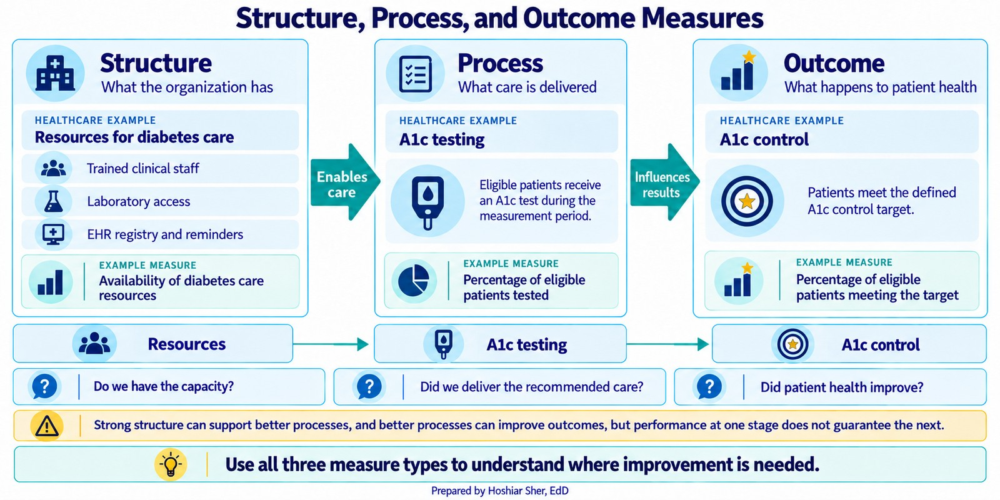
Where the data came from: observational studies and experiments
Reading a table and defining a measure both assume the data already exists. How it was collected shapes what it can prove, so an analyst has to know the study behind the file. A useful first distinction among primary studies is observational versus experimental:
- An observational study records what happens without intervening. Claims, scheduling, and registry data are all observational: no one assigned patients to be sick or to miss appointments; the system simply logged events. Observational data can reveal that two things move together, but it cannot by itself establish that one caused the other, because the groups being compared usually differ in other ways.
- An experiment deliberately assigns a treatment to measure its effect. A clinic that randomly sends reminders to half of its patients and withholds them from the other half is running an experiment. Because random assignment makes the two groups alike on average beforehand, a difference afterward can be attributed to the reminder rather than to who ended up in which group, provided randomization was preserved, outcomes were measured consistently, and differential attrition or interference did not compromise the comparison.
Figure 10 sets the two side by side: in an observational study the exposure occurs naturally, while an experiment assigns it at random.
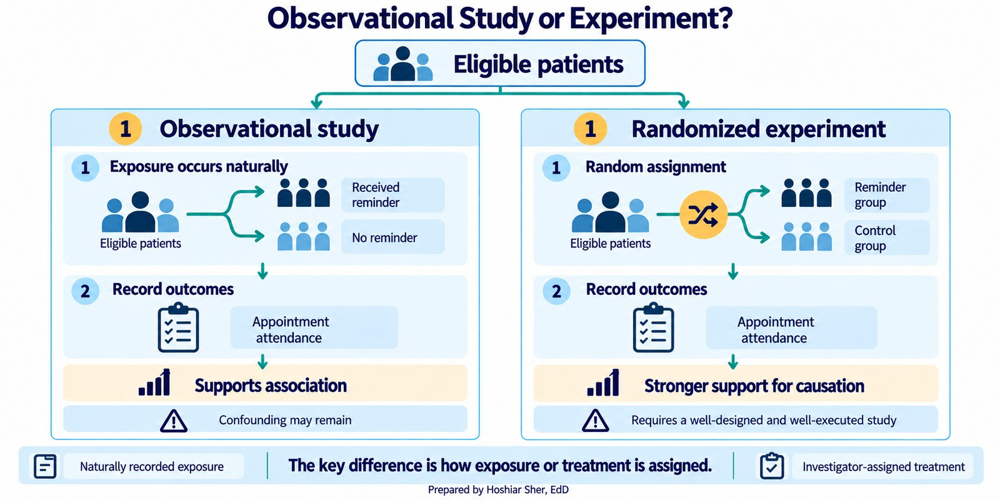
The distinction matters because most healthcare data is observational, and observational data invites a tempting mistake. When two groups differ on an outcome, a third factor often explains both. A confounder is a variable related to both the exposure and the outcome, and not on the causal pathway between them; it need not be hidden. Sicker patients, for instance, both stay longer and cost more, so a raw link between length of stay and cost is partly the work of severity. Chapter 12 returns to confounders when it holds factors constant in a model.
Figure 11 draws that example: illness severity feeds both length of stay and cost, so part of their observed link is really severity at work.
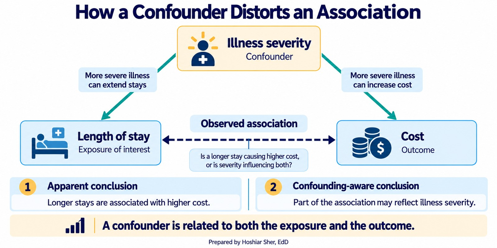
Observational and experimental are the two broad families, but the
specific studies you will meet, including the ones in
datasets/DS8_studies_master.csv, fall into a few
recognizable designs within and around them:
- A cohort study follows a defined group over time, either prospectively or by reconstructing history from existing records, to see who develops an outcome; most registries work this way. It is observational.
- A cross-sectional study takes a snapshot of a population at one point in time, quick to run but unable to show change.
- A quasi-experiment studies an intervention without full randomization, such as comparing a clinic before and after a new reminder system; it sits between the observational and experimental families.
- A quality-improvement (QI) project tests a small operational change on the ground, often in rapid cycles.
- A systematic review does not enroll new participants; it systematically synthesizes evidence from existing studies. A meta-analysis goes one step further and pools their results statistically.
- A public-health report summarizes surveillance or population data to describe a trend rather than test a hypothesis.
These sort into three jobs: a primary study collects or analyzes primary observations (cohort, cross-sectional, trial, QI), an evidence synthesis combines existing studies (systematic review, meta-analysis), and a report describes population data. Knowing which of the three you are reading tells you how much weight its conclusion can bear.
datasets/DS8_studies_master.csv holds 24 studies
spanning these designs. Figure 12 counts how often each appears. A trial
can support stronger causal claims but is expensive and slow; a
cross-sectional snapshot is quick but cannot show change over time.
Matching the approach to the question, and recording its limits, is part
of the analyst’s job.
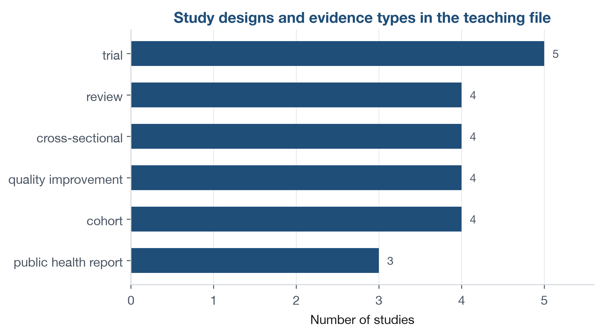
Open datasets/DS8_studies_master.csv and pick any three
rows. First sort each into one of three buckets by its
study_design: a primary study (trial, cohort,
cross-sectional, or QI project), an evidence synthesis (review), or a
public-health report. For the primary studies, add one more label:
observational or experimental. Then look at
evidence_strength_tier and notice that it does not track
design alone. A trial can be rated Low and a cohort Moderate, because
the tier also reflects how well a study was carried out, not just its
design, so a strong cohort can outrank a weak trial.
Populations, samples, and the gaps that bias them
You rarely have data on everyone. A study observes a sample and hopes it stands in for the whole. Three linked ideas describe that hope, and the gaps between them are where trouble hides:
- The target population is everyone the question is about, for example all adults attributed to our primary care practices.
- The sampling frame is the list you can actually reach, such as the appointment roster in the scheduling system.
- The sample is the records you end up observing. It shrinks in two steps: first you select records from the frame, then only some of those selected records respond.
Figure 13 traces these stages. People in the population but not on the frame never appear in your data, no matter how carefully you collect; people on the frame who are selected but do not respond drop out too. Every step inward is a chance for the sample to stop looking like the population. The frame is rarely a clean subset: it can also include people who are not in the target population, such as patients who have moved away or died. The mismatch between the population and the frame, in either direction, is called coverage error.
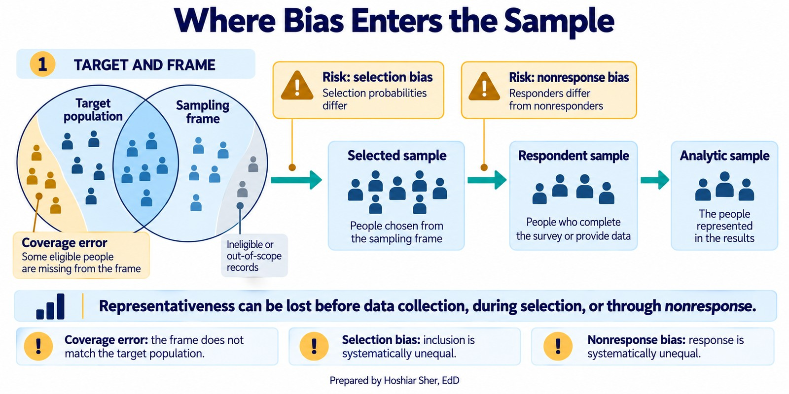
Two biases live in those gaps:
- Selection bias happens when the way units enter the sample is related to what you are measuring and is not corrected for, so the observed sample does not represent the population. Unequal selection chances alone are not bias: a deliberate oversample stays unbiased once you weight the groups back to their population shares.
- Nonresponse bias happens when the people who do not answer differ from those who do, which quietly skews any survey (Groves et al., 2009).
Neither is exotic; both are the default outcome of collecting whatever data is convenient. At the far extreme sits a single vivid story, a friend who recovered after a treatment. That is anecdotal evidence: not a biased sample but no sample at all.
Not every file is a survey, though. An administrative file like the appointment data is a frame with coverage gaps, since patients who never booked never appear, but because it records events the system logged rather than answers people chose to give, nonresponse bias does not apply to it.
Bias usually enters before analysis, through who got into the data and who did not. State your target population, your frame, and your method so the gaps are visible instead of hidden.
Four ways to draw a sample
When you do sample, the method decides how fairly the sample represents the population. Four methods cover most of what you will meet:
- Simple random sample: every unit on the frame has an equal chance of selection, usually through a random number generator. It is the fairest baseline and the one other methods are judged against.
- Stratified sample: split the frame into subgroups, or strata, such as age bands or payers, then sample within each. Proportional allocation gives every stratum some records; when a small but important subgroup is too thin to analyze on its own, you oversample it deliberately, then weight the strata back to their population shares when you combine them.
- Cluster sample: split the frame into natural groups, such as clinics or counties, randomly pick whole clusters, and include everyone in the chosen ones. It is cheaper for large, dispersed populations.
- Systematic sample: order the frame and take every kth record from a random start. It is simple when you have a full list, but it can produce biased or inefficient results when a periodic pattern in the ordering aligns with the sampling interval k.
A large real sample often combines these in stages, a multistage sample: pick clusters first, then sample within each. The choice is not cosmetic. A convenience sample of whoever walks by is cheap and almost always biased; a stratified random sample costs more and travels better to the population.
Figure 14 shows the four methods, plus the multistage design that combines them.
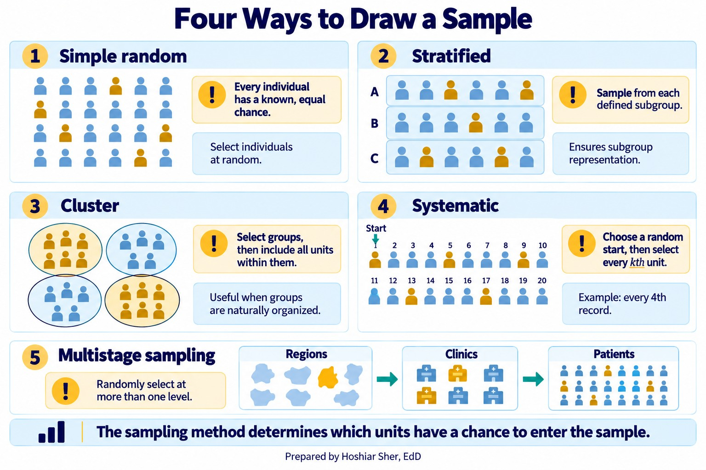
Experiments: comparing on purpose
An experiment earns its stronger causal claim through deliberate design. Four features do the work:
- A control group gives you something to compare against. It need not receive nothing: usual care, a placebo, or an alternative treatment all work, as long as it differs from the treatment under study. Without a comparison group you cannot tell the treatment’s effect from everything else that changed.
- Randomization, assigning each unit to treatment or control by chance, makes the groups alike on average on both measured and unmeasured characteristics, so a later difference more plausibly reflects the treatment than some pre-existing imbalance.
- Replication, enough units in each group, keeps a chance difference from masquerading as an effect.
- Blocking, grouping similar units before randomizing within each block, reduces variation attributable to the blocking factor so the treatment effect stands out more clearly.
A clinic testing text reminders would randomly assign patients to receive them or not, keep enough patients in each group, and compare no-show rates afterward. Blinding, when feasible, keeps expectations from coloring the result. The payoff is support for a causal claim that observational data cannot easily provide: a difference that random assignment lets you attribute to the treatment, as long as randomization is preserved, outcomes are measured consistently, and differential attrition or interference does not compromise the comparison. That said, a carefully designed observational or quasi-experimental study can also support a causal reading, but only under assumptions it must state and defend.
Figure 15 traces a reminder trial end to end, from eligible patients through optional blocking, random assignment, and the comparison of outcomes between the reminder and control groups.
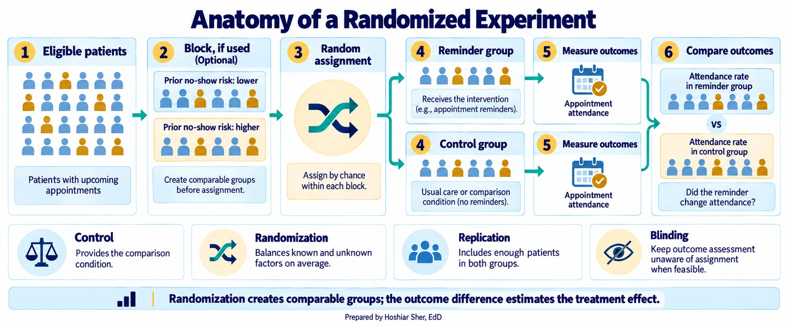
Walkthrough: keys, grain, and a defined rate
This walkthrough continues from
Clinic_NoShow_Analysis.xlsx, the workbook you built in
Chapter 3, which already holds the appointment data as a Table named
Appointments. To check the keys you also need the patient
dimension in the same workbook: on a new sheet, choose Data >
From Text/CSV, import
datasets/DS1_patient_dim.csv, and load it; Power Query
names the loaded Table after the file, so rename it
Patients on the Table Design tab. (Opening
the CSV on its own with File > Open would create a
separate workbook, and a Table cannot be saved inside a CSV, so the
cross-sheet formulas below would break.) Save the workbook.
Start with the primary key. The Patients Table has
12,000 rows, and patient_id should name each patient
exactly once and never be blank. Check both halves of that rule. First,
compare the row count to the count of distinct values:
=ROWS(Patients[patient_id]) returns 12,000 and
=COUNTA(UNIQUE(Patients[patient_id])) also returns 12,000,
so no value repeats. Second, confirm nothing is missing with
=COUNTBLANK(Patients[patient_id]), which returns 0. A key
that is both unique and complete can be trusted; if either check failed,
a join through the column would multiply or drop rows.
Now the foreign key. In the Appointments Table,
patient_id is a foreign key that should point at the
patient dimension. Check referential integrity by counting the
appointment keys that match no patient:
=SUM(--ISNA(XMATCH(Appointments[patient_id], Patients[patient_id])))
returns 0, so every one of the 36,000 appointments resolves to a real
patient and none is orphaned. (XMATCH is far faster in
practice here; a COUNTIF comparing both columns row by row
would run hundreds of millions of comparisons and can stall an older
machine.) The link is sound, so an appointment can be joined to its
patient’s attributes without losing rows. Notice also that the dimension
holds 12,000 patients while only 10,512 appear in the appointment file.
That is normal: a dimension can list members who had no events in the
period, and a join has to account for them.
Finally, grain. The appointment table has 36,000 rows at the
appointment grain. Ask a coarser question and the row count drops. Count
the distinct patients directly with
=COUNTA(UNIQUE(Appointments[patient_id])), which returns
10,512, a world away from the 36,000 visit rows; the same move gives 110
distinct providers and 14 distinct facilities. (A PivotTable can report
the same distinct counts through its Distinct Count
value option, but that option requires the Data Model and is unavailable
in Excel for Mac, so the UNIQUE formula is the portable
check.) Figure 16 shows the four counts. These are four alternative
groupings of the same records, not rungs of a single hierarchy: a
patient does not nest inside a provider, nor a provider inside a
facility. They are simply different ways to collapse the appointments,
and each answers a different question. Reporting one grain when the
question asks for another is a common way a count goes wrong.
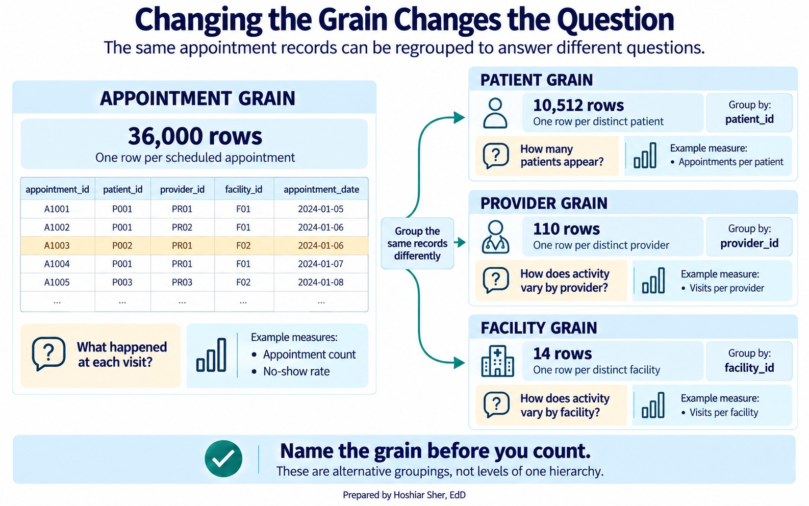
Reading this figure is the habit the data-source map in Chapter 2 was pointing toward. Naming the grain first, then counting, keeps the analyst from answering a patient question with a visit number.
Return now to the manager’s question from the start of the chapter:
“How many patients did we serve last quarter?” Answering it honestly
means stacking three filters on top of the grain change: restrict the
rows to last quarter (say 2025 Q4), keep only Completed
visits, because “served” means a patient actually seen, and then count
distinct patient_id. One formula does all three:
=COUNTA(UNIQUE(FILTER(
Appointments[patient_id],
(Appointments[appointment_date]>=DATE(2025,10,1)) *
(Appointments[appointment_date]<DATE(2026,1,1)) *
(Appointments[attendance_outcome]="Completed")
)))It returns 2,735 patients, not the 10,512 distinct patients in the
whole file and certainly not the 36,000 visit rows. The strict
<DATE(2026,1,1) keeps every appointment on 31 December
even if the date column also carries a time of day. Every filter you
drop inflates the number: count all scheduled patients in the quarter
rather than only those seen and you get 3,643; ignore the quarter
altogether and you are back to 10,512.
Figure 17 stacks those four numbers, from the 36,000 appointment rows down to the 2,735 patients actually served last quarter.
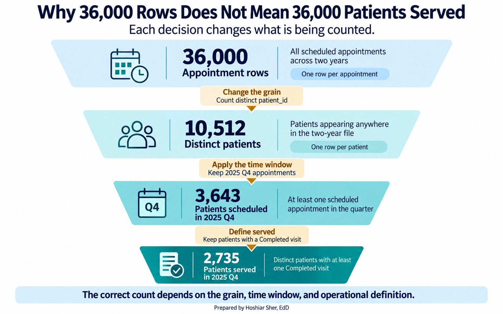
You can produce the grain collapse yourself with a PivotTable, the tool Chapter 3 introduced:
- Select the
AppointmentsTable and choose Insert > PivotTable. - Drag
facility_idto Rows, and dragappointment_idto Values, set to Count. Fourteen rows appear, one per facility, and their counts sum to 36,000, the visit total you began with. - Swap
facility_idforprovider_idin Rows. The same file regroups into 110 provider rows that still sum to 36,000.
Each field placed in Rows creates a summary at a different grouping level; the source table stays at the appointment grain. That is the point of Figure 16 made concrete: the unit of analysis is a choice you make, and the PivotTable is where you make it.
Now carry the same file into a defined measure. The raw no-show
count, 4,913 rows where attendance_outcome is
No Show, is not in dispute. What differs is which
appointments you treat as losses and which denominator you measure them
against, and three analysts could each defend a different choice:
- Divide by every scheduled appointment (36,000), and the rate is 13.6 percent.
- Divide by only the kept-or-missed visits,
CompletedplusNo Show(30,571), and it is the 16.1 percent you computed in Chapter 3. - Count the 1,873 late cancellations as no-shows in both the numerator and the denominator, because a slot lost at the last minute cannot be refilled. The numerator becomes 4,913 plus 1,873, or 6,786, and the denominator 30,571 plus 1,873, or 32,444, so the rate rises to 20.9 percent.
In this file, a Late Cancel is cancelled within half an
hour of the appointment (at most 24 minutes before) and an
Early Cancel six or more hours ahead. Many organizations
instead treat anything inside 24 hours as a late cancellation; under
that rule, 345 Early Cancel rows would join definition C
and the rate would rise from 20.9 to 21.7 percent, so the cutoff is
itself a definition choice worth stating.
Figure 18 shows the three side by side.
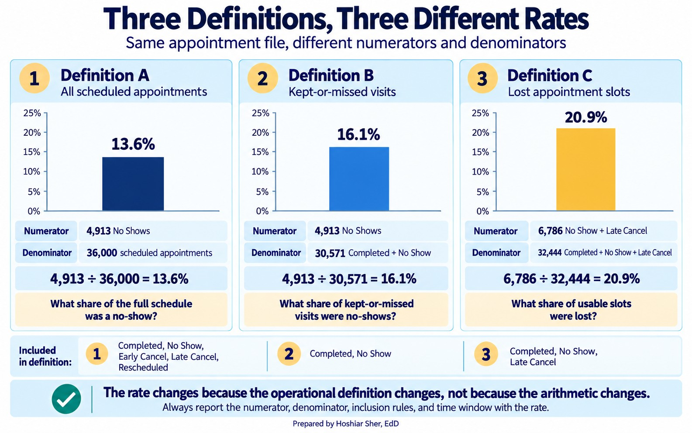
No single one of these is right and the others wrong. The all-appointments rate describes the whole schedule, the kept-or-missed rate describes attendance among appointments that were not cancelled or rescheduled, and the late-cancel rate describes slot waste. Each answers a slightly different question. What matters is that you choose the definition on purpose, write it down as an operational definition, and report it with the number. A rate reported without its definition is not a finding; it is a rumor.
Open datasets/DS2_appointments_clean.csv. Without
computing exact values, answer: (1) What is the unit of analysis of this
table? (2) Name one column that is a foreign key and the table it points
to. (3) If you wanted “average appointments per patient,” which two of
the numbers in Figure 16 would you use, and how? (4) Using the
cancel_datetime and appointment_date columns,
write an operational definition for a “same-day cancellation rate”: say
which rows count as a same-day cancellation, name the denominator, state
what you include and exclude, and give the time window. You need not
compute it. The answer key is at the end of the chapter.
The star schema in Figure 5 reflects a design choice called normalization: each fact is stored once, and descriptive attributes are pushed out to dimension tables so that a patient’s payer or language lives in exactly one place. Normalization prevents update anomalies, the situation where the same fact, stored redundantly across many rows, is changed in some and missed in others. The cost is that answering a question often requires a join.
Denormalization makes the opposite trade. Copying a
few dimension attributes directly into the fact table, as
datasets/DS2_appointments_clean.csv does with
patient_age and zip_area_id, removes the join
and speeds up reporting, at the risk that the copy drifts from the
source if the dimension later changes. Analysts move between the two on
purpose: normalized tables for storage and integrity, a denormalized
wide table for a specific analysis. Recognizing which one you are
holding tells you whether a stored attribute can be trusted as current
or is only a snapshot that may now be stale.
These two stories are illustrative composites, not reports of any specific organization. A reporting team published a “patients served” figure that was really a row count from a claims table. Because a single episode of care can generate many claim lines, the number was inflated several times over, and it climbed every time the billing system split a claim. Leadership set targets against it. When an analyst finally named the grain, one row per claim line rather than one row per patient, the real patient count was a fraction of the reported one. The measure had been counting paperwork and calling it people.
A second team hit the mirror image of the same problem. A health system compared no-show rates across clinics and flagged one as a poor performer, until an analyst found that the flagged clinic counted late cancellations as no-shows while the others did not. Put on one definition, the gap nearly closed. The first story shows the wrong grain inflating a count; the second shows an undefined measure inventing a difference. Structure and definition fail the same way: the number looks solid and means something other than you think.
- A table is a data matrix: rows are records, columns are variables. Reading it starts with naming what one row is.
- Every column has a type: quantitative (discrete or continuous) or qualitative (nominal or ordinal). The type, not the storage format, decides what you may do with it, so numeric-looking identifiers and flags are categories, not quantities.
- A primary key uniquely identifies each row; a foreign key in another table points back to it.
- Referential integrity means every foreign key value exists in the table it references. Confirm it before you join.
- The unit of analysis, or grain, decides what you can count. Changing the grain changes the number, on purpose.
- Answer the question at the right grain. Reporting a visit count as a patient count is a frequent error.
- Knowing what a row is tells you what you can count; the measure tells you what to count. Define the measure first, then let the data produce the metric.
- A rate needs four stated parts: numerator, denominator, inclusion and exclusion rules, and time window. A well-defined measure can still be the wrong measure if it fails construct validity.
- How the data was collected decides what it can prove. Randomized experiments generally give the strongest basis for a causal claim; well-designed observational and quasi-experimental studies can support one too, but only when their assumptions are explicit and defensible.
- A sample stands in for a target population only as well as its frame and method allow. Selection and nonresponse bias enter in the gaps, so state your population, frame, and method.
- Match the sampling method to the situation: simple random, stratified, cluster, or systematic, often combined in stages.
- For three datasets in
datasets/, name the unit of analysis, one likely primary key, and one likely foreign key. - Explain in two sentences why
datasets/DS2_appointments_clean.csvcannot directly answer “how many patients did we serve” even though it containspatient_id. - Using Figure 16, compute the average number of appointments per facility from the two relevant numbers, and state the unit of analysis of your answer.
- Suppose you join appointments to a patient dimension and the row
count grows from 36,000 to 41,300. The dimension turns out to store one
row per coverage period, so a patient who switched insurance appears
several times and
patient_idrepeats. What is this kind of join fault called, and how would you confirm it with a formula? - Give an example of a question that must be answered at the facility grain and one that must be answered at the appointment grain.
- For
datasets/DS2_appointments_clean.csv, classify each column by type (quantitative discrete, quantitative continuous, qualitative nominal, or qualitative ordinal):lead_days,copay_usd,visit_type,attendance_outcome,no_show_flag, andpatient_id. For any that only look numeric but are not quantities, say why. - Rewrite each vague question as one you could compute from a teaching dataset: (a) “Is the ED too slow?” (b) “Are we losing money on denials?” (c) “Do patients like us?”
- Write the full operational definition of the no-show rate you would recommend to a clinic director, and give one sentence justifying your choice of denominator.
- Give an example of a measure that is easy to count but has weak construct validity for the question “are our diabetic patients well controlled?”
- Classify each as observational or experimental, and say what each can show: (a) a registry linking obesity to diabetes; (b) a trial that randomly assigns a reminder to half of patients; (c) a chart review of last year’s readmissions.
- For “do our diabetic patients get an annual eye exam,” name a target population, a sampling frame, and one bias that could enter in the gap between them.
- A health system wants to estimate patient satisfaction across five clinics on a limited budget. Recommend one of the four sampling methods and justify the choice in two sentences.
- A quality team draws a systematic sample from the clinic’s appointment list, which is sorted by appointment time, taking every 20th slot from a random start. Name the unit of analysis, give the bias risk specific to systematic sampling, and explain in two or three sentences how that risk could distort a result.
Try It. The unit of analysis is one scheduled
appointment. patient_id is a foreign key pointing at
datasets/DS1_patient_dim.csv (so are
provider_id and facility_id, pointing at their
dimensions). For average appointments per patient, divide the
appointment count by the distinct-patient count from Figure 16, which is
36,000 divided by 10,512, or about 3.4 appointments per patient. The
answer is at the patient grain. A reasonable same-day cancellation rate
counts, in the numerator, any appointment whose
cancel_datetime falls on its appointment_date
(mostly Late Cancel rows, with a few
Early Cancel and Rescheduled rows that also
happened that day); sets the denominator to Completed plus
No Show plus those same-day cancellations; excludes
cancellations and reschedules made on earlier days; and states a
reporting period, such as a single quarter you filter the two-year file
down to. A clinic manager focused on slot use and a finance manager
focused on lost revenue may reasonably choose different
denominators.
Selected exercises.
Exercise 2. The file sits at the appointment grain,
so one patient can own many rows; counting the 36,000 rows counts
visits, not patients. Collapsing to one row per patient_id
gives 10,512 distinct patients, and even that is not quite “patients
served”: served means a patient you actually saw, that is, one with at
least one Completed visit, and only 9,692 qualify; the rest
appear solely through no-shows or cancellations. The file also spans two
years, so a “last quarter” question means filtering to the quarter
first. Each tightening of the definition changes the count.
Exercise 4. The join multiplied rows because
patient_id is not unique in that dimension: a patient with
several coverage-period rows matches each appointment more than once, a
one-to-many join against what is called a slowly changing dimension. It
is a join-key cardinality and grain problem, patient_id is
not unique because the dimension contains multiple coverage-period
records, not a referential-integrity one; an orphaned foreign key would
instead drop rows or leave blank columns. Confirm it by comparing
=ROWS(Patients[patient_id]) with
=COUNTA(UNIQUE(Patients[patient_id])); if the distinct
count is smaller, the key repeats. The safe fix depends on the question:
for a current attribute, keep one current row per patient; for a
historical one, join on patient_id together with the
appointment date falling inside each coverage period’s effective dates.
It is really a grain-and-time problem, not just duplicate removal.
Exercise 6. lead_days is quantitative
discrete; copay_usd is quantitative continuous;
visit_type and attendance_outcome are
qualitative nominal. no_show_flag and
patient_id only look numeric: no_show_flag is
a two-level flag and patient_id is an identifier code.
Never average the identifier. You may average the 0/1 flag, but only
because that yields a proportion (a no-show rate), not because the flag
is itself a quantity.
Exercise 8. A defensible definition is No Shows divided by Completed plus No Shows, over a stated reporting period, excluding Early Cancel, Late Cancel, and Rescheduled; the kept-or-missed denominator counts only the visits a patient was expected to keep, which is what “no-show” is meant to measure.
Exercise 10. (a) Observational; it can show that obesity and diabetes occur together, not by itself that one causes the other. (b) Experimental; because the reminder was randomly assigned, a later difference in no-shows can be attributed to it, provided the trial was large enough, follow-up was adequate, and dropout was not lopsided between the groups. (c) Observational; a chart review records what already happened, so it can describe patterns but not establish causes.
Exercise 12. A stratified sample is a strong choice: treat each clinic as a stratum and sample within every clinic so all five sites appear. If one clinic is much smaller, oversample it deliberately so its estimate is precise enough to use. A simple random sample across the whole system could, by chance, underrepresent a small clinic.
Exercise 13. The unit of analysis is one appointment slot. The risk specific to systematic sampling is periodicity: if the ordering has a repeating pattern whose period lines up with the interval of 20, the sample keeps landing on the same kind of slot. Because the list is sorted by appointment time, every 20th slot might always fall near 8 a.m., over-sampling early-morning visits and distorting any estimate, such as average wait time, that varies across the day.
Broman, K. W., & Woo, K. H. (2018). Data organization in spreadsheets. The American Statistician, 72(1), 2-10. https://doi.org/10.1080/00031305.2017.1375989
Cronbach, L. J., & Meehl, P. E. (1955). Construct validity in psychological tests. Psychological Bulletin, 52(4), 281-302. https://doi.org/10.1037/h0040957
Diez, D. M., Çetinkaya-Rundel, M., & Barr, C. D. (2019). OpenIntro statistics (4th ed.). OpenIntro.
Donabedian, A. (1988). The quality of care: How can it be assessed? JAMA, 260(12), 1743-1748. https://doi.org/10.1001/jama.1988.03410120089033
Groves, R. M., Fowler, F. J., Couper, M. P., Lepkowski, J. M., Singer, E., & Tourangeau, R. (2009). Survey methodology (2nd ed.). Wiley.
Kimball, R., & Ross, M. (2013). The data warehouse toolkit (3rd ed.). Wiley.
Wickham, H. (2014). Tidy data. Journal of Statistical Software, 59(10), 1-23. https://doi.org/10.18637/jss.v059.i10
- Table
- A rectangle of data in which rows are records and columns are variables; also called a data matrix.
- Variable
- A column of a table, one attribute measured for every record.
- Observation
- One row of a table; a single unit the data describes.
- Quantitative variable
- A variable that holds a numeric quantity you can do arithmetic on; also called numeric. It is either discrete or continuous.
- Qualitative variable
- A variable that holds a label placing a record in a group; also called categorical. It is either nominal or ordinal.
- Discrete variable
- A quantitative variable that counts and takes separate, whole values, such as a number of visits.
- Continuous variable
- A quantitative variable measured on a scale that can take any value in a range, such as cost or minutes.
- Nominal variable
- A qualitative variable whose categories have no inherent order, such as visit type or payer.
- Ordinal variable
- A qualitative variable whose categories have a meaningful order but not necessarily equal gaps, such as a 1-to-5 satisfaction rating.
- Levels
- The distinct categories a qualitative variable can take.
- Primary key
- A column, or a combination of columns, whose value uniquely identifies each row of a table and is never missing.
- Foreign key
- A column in one table that refers to the primary key of another.
- Join
- Combining two tables by matching a foreign key to a primary key, producing a wider table whose rows carry columns from both.
- Referential integrity
- The property that every foreign key value exists in the table it points to.
- Unit of analysis
- What one row of a table represents; also called the grain. It decides what the table can count.
- Tidy data
- Data in which each row is one observation at a single grain and each column is one variable.
- Measure
- A precise, repeatable definition of something you can count or calculate.
- Metric
- The number a measure produces when it is run on data.
- Rate
- A measure formed by dividing a numerator by a denominator over a fixed time window.
- Numerator
- The events of interest being counted in a rate.
- Denominator
- The population the numerator events are drawn from.
- Inclusion and exclusion criteria
- The rules that decide which records belong in the denominator.
- Operational definition
- A measure written in terms of the actual columns and values in the data, so that anyone can reproduce it.
- Construct validity
- The degree to which what a measure counts actually stands in for the thing the question is about.
- Observational study
- A study that records what happens without intervening; it can show associations but cannot by itself establish causation.
- Experiment
- A study that deliberately assigns a treatment to measure its effect, which can support a causal claim.
- Confounder
- A variable related to both the exposure and the outcome and not on the causal pathway between them, which can explain an apparent link; it need not be hidden.
- Quasi-experimental study
- A study that compares a treatment and a comparison group without full randomization; it can support causal claims under stated, defensible assumptions.
- Cohort study
- An observational study that follows a defined group over time, prospectively or retrospectively, to see who develops an outcome.
- Cross-sectional study
- An observational study that measures a population at a single point in time.
- Systematic review
- A study that does not enroll new participants but systematically synthesizes evidence from existing studies; a meta-analysis pools their results statistically.
- Target population
- Everyone the question is about.
- Sampling frame
- The list of records you can actually reach and sample from.
- Sample
- The records you observe. It narrows in two steps: the selected sample is what you draw from the frame, and the respondent sample is the subset that actually provides data.
- Selected sample
- The records drawn from the sampling frame before any nonresponse.
- Respondent sample
- The subset of the selected sample that actually responds or yields data.
- Analytic sample
- The records finally used in an analysis, which may be smaller than the respondent sample after missing-data, eligibility, or analysis-specific exclusions.
- Selection bias
- Distortion that occurs when the way units enter the sample is related to what is being measured and is not corrected for, so the sample does not represent the population.
- Nonresponse bias
- Distortion that occurs when those who do not respond differ from those who do.
- Coverage error
- The mismatch between the target population and the sampling frame: eligible people the frame omits, and ineligible people it wrongly includes.
- Anecdotal evidence
- A single vivid case offered in place of a sample; it cannot support a general claim.
- Simple random sample
- A sample in which every unit on the frame has an equal chance of selection.
- Stratified sample
- A sample drawn separately within defined subgroups so each subgroup can be represented according to the allocation plan.
- Cluster sample
- A sample of whole natural groups, such as clinics, with everyone in the chosen groups included.
- Systematic sample
- A sample that takes every kth record from a random start in an ordered frame.
- Multistage sample
- A sample drawn in stages, such as selecting whole clusters first and then sampling within each.
- Convenience sample
- A sample of whoever is easiest to reach; cheap but prone to bias.
- Control group
- The units in an experiment that do not receive the treatment under study, instead getting usual care, a placebo, or an alternative, used as a comparison.
- Randomization
- Assigning units to treatment or control by chance so the groups are alike on average beforehand.
- Replication
- Including enough units in each group that a chance difference is unlikely to be mistaken for a real effect.
- Blocking
- Grouping similar units before randomizing within each block, to reduce variation attributable to the blocking factor.
- Blinding
- Keeping participants or assessors unaware of group assignment so expectations do not color the result.
- Study design
- The overall plan for how evidence is collected, such as a trial, cohort, or cross-sectional study.